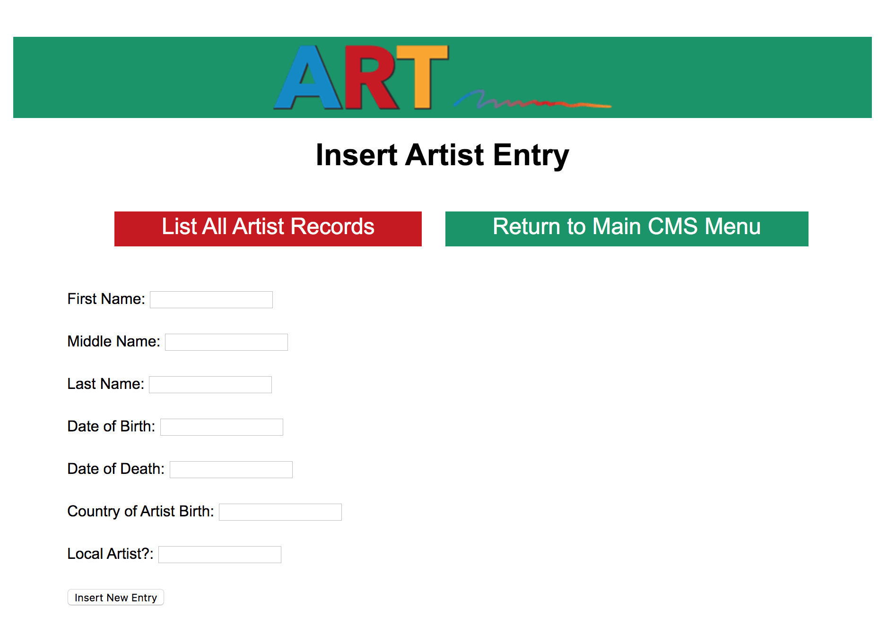
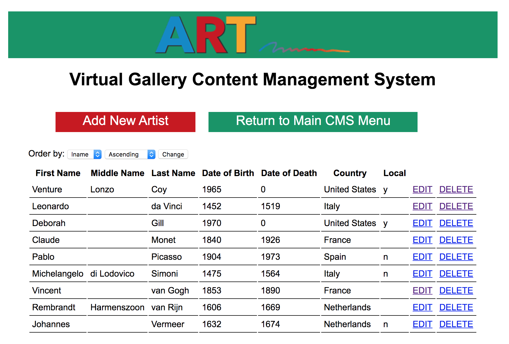
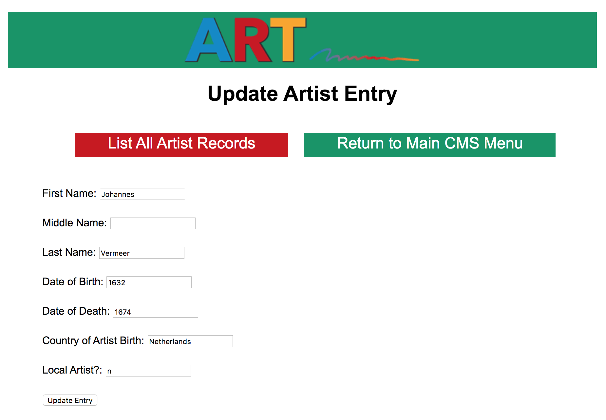
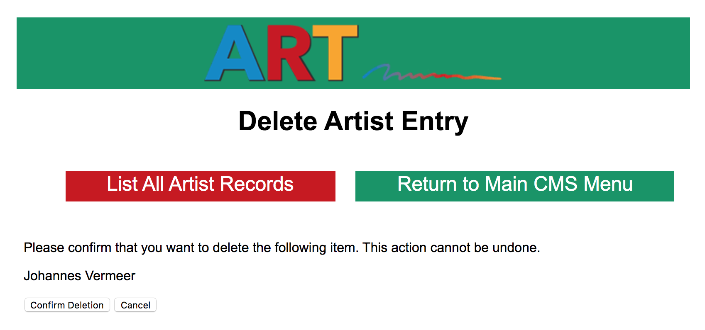
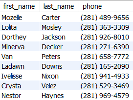
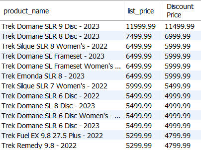
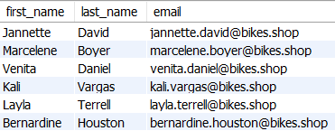
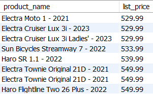
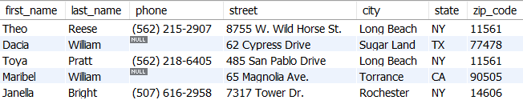

Instructions: Using the v_art and bike schemas, write SQL queries in Workbench that will solve each of the following scenarios or questions. Write all your queries in one tab in Workbench. Please number your queries by writing a comment above each of your queries similar to this comment:
-- Query 1
Save your SQL script with all five queries as a .sql file and submit your saved .sql file.
Questions 1-4 are queries designed to run the back-end content managment system (CMS) of the virtual art gallery application. Screenshots below are from that CMS.
1. The manager wants to add the artist Johannes Vermeer as an artist in the database. He was born in 1632 and is from the Netherlands and died in 1674. He is not a local artist. What would the insert statement look like that would run as the manager adds a new artist to the system? (The following image is a screenshot of the backend of the system that the manager of the art gallery would see. We are interested only in the SQL statement that would run in the code when a new artist is added.)

2. If the manager lists all the artists with 'List all Artist Records' the following screen renders sorted by the last name of the artist. What query would allow all these seven columns of values to show on the screen alphabetically by the last name?

3. The manager wants to edit Vermeer's information. She finds out that he died in 1675 not 1674. She clicks EDIT next to Johannes Vermeer the following screen displays. The manager changes the 'Date of Death' value to be 1675 and clicks 'Update Entry'. What SQL statement will run in the background to accomplish this edit? (Don't forget a WHERE clause!)

4. The manager decides that she wants to delete Vermeer as an artist from her database. She clicks the DELETE next to the Vermeer's row of information and the following screen renders confirming that she really wants to delete Vermeer as an artist. What SQL statement will run in the code that would delete Johannes Vermeer from the database when the manager clicks 'Confirm Deletion'? (Don't forget a WHERE clause!)

Create queries that the bike shop may need for the following business purposes.
5. There is a product demonstration and bike race planned in Houston, Texas and you'd like to text each of your customers from that city to see if they will participate. You need a list of their first and last names and phone numbers.
Your result set should look like this with nine customers:

6. You need to sell more of your high-end bikes. You want to take $500 off all bikes that have a list price of $5,000.00 or more. You need to have a list showing the bike name, list price and discount price with an alias of 'Discount Price'. Sort the list showing the most expensive bike first. The result set will look like this:

7. An important announcement was given to all the staff at your store (store_id 1). The same announcement needs to get to all the other staff at the other stores. You don't want to email all your staff again. You need a list of all the staff and their email who are not from your store.

8. A customer needs more information about a specific bike, but all they know is that is has the word 'spider' in the name. You need to list the name, model year, and list price of all the bikes with the word 'spider' somewhere in the name.

9. You need to list all bikes names that have a range of prices from $500 to $550 sorted with the lowest price first.

10. Show the customer's first_name, last_name, phone, street, city, state, zip_code who:
Limit the result set to the first 5 results.
